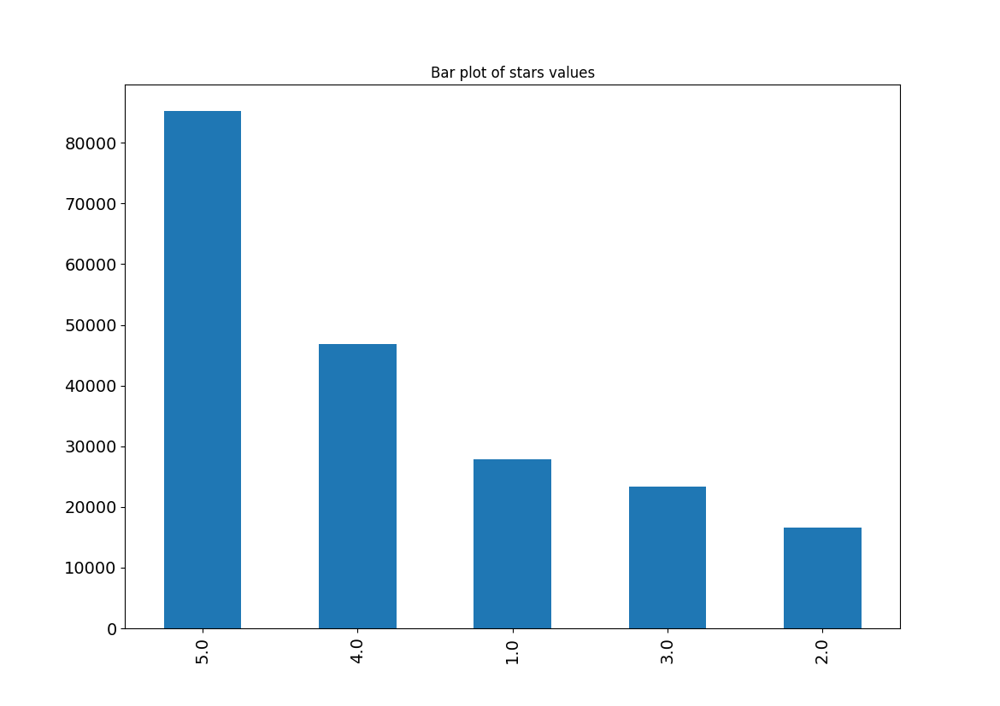
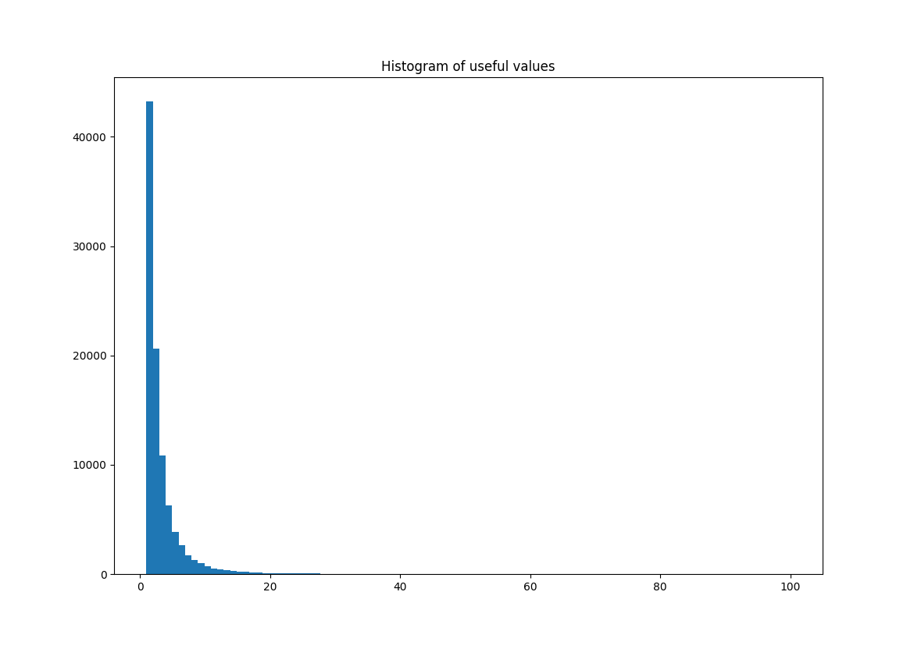
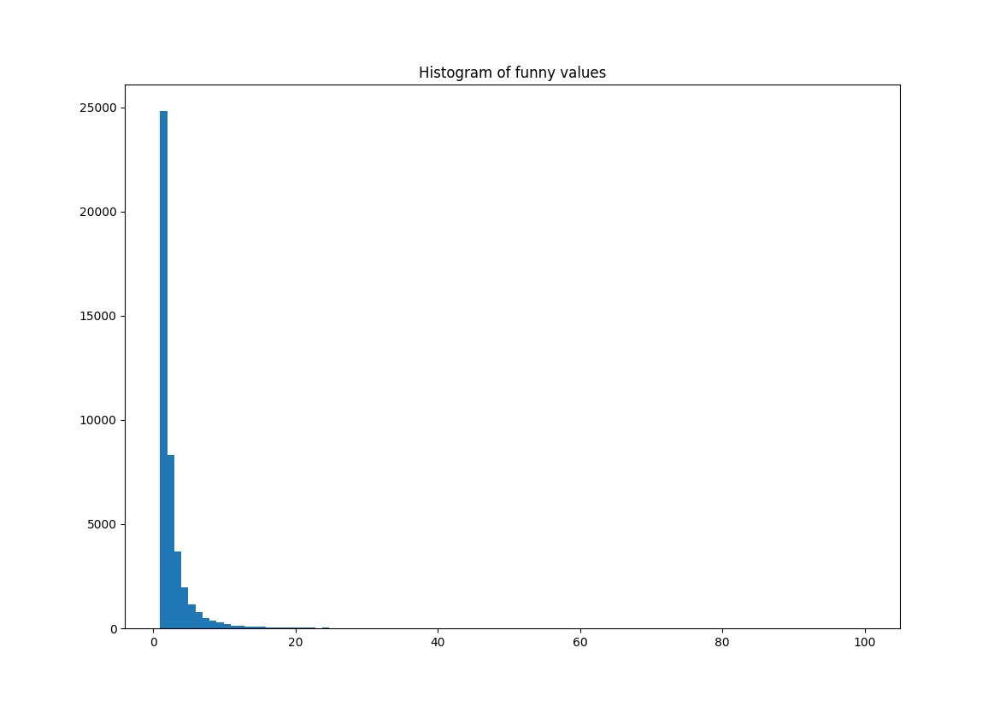
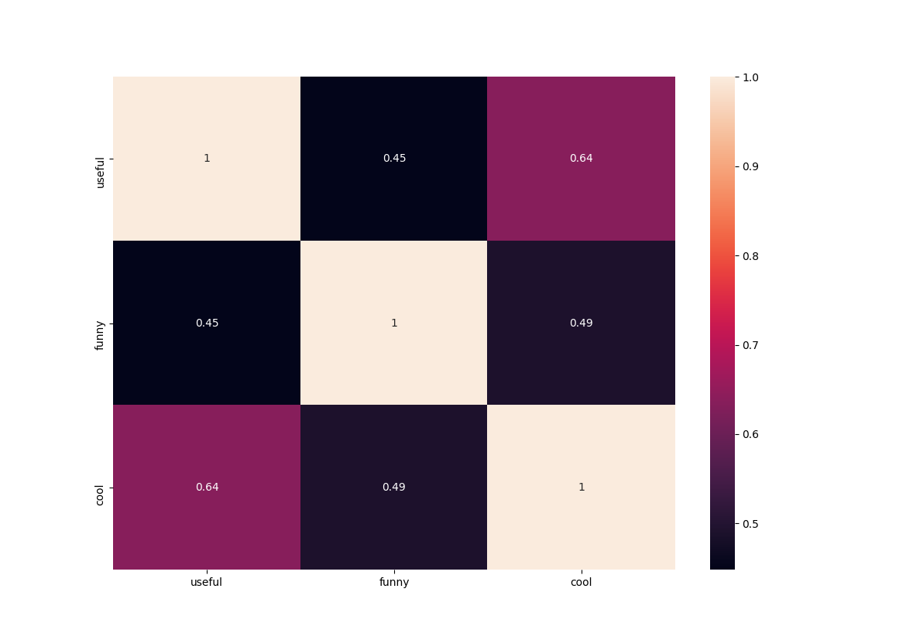

Your Personalized Data Science Report
The dataset is yelp_subset_*.csv
Categorical variables
Here, categorical variablea are plotted using bar plots/graphs/charts. The definition of a bar chart from
Wikipedia
: "A bar chart or bar graph is a chart or graph that presents categorical data with rectangular bars with heights or lengths proportional to the values that they represent...A bar graph shows comparisons among discrete categories. One axis of the chart shows the specific categories being compared, and the other axis represents a measured value."

Numerical variables
Here, numerical variablea are plotted using histogams. The definition of a histogram from
Wikipedia
: "A histogram is an accurate representation of the distribution of numerical data. It is an estimate of the probability distribution of a continuous variable...It differs from a bar graph, in the sense that a bar graph relates two variables, but a histogram relates only one. To construct a histogram, the first step is to "bin" (or "bucket") the range of values—that is, divide the entire range of values into a series of intervals—and then count how many values fall into each interval. The bins are usually specified as consecutive, non-overlapping intervals of a variable. The bins (intervals) must be adjacent, and are often (but are not required to be) of equal size."



Heatmap
The heatmap below demonstrates Pearson’s correlations between the numerical variables within the dataset. The definition of a heatmap from
Wikipedia
: "A heat map (or heatmap) is a graphical representation of data where the individual values contained in a matrix are represented as colors." The correlation values from the heatmap can be used to determine the strength and direction of a linear relationship between two variables - we can interpret this as follows: High correlation values means the relationship between the variables is strong, and low correlation values implies the relationship is weak. Positive correlation values imply positive relationships (one variable in the relationship increases, the other tends to increase); negative correlation values imply negative relationships (one variable in the relationship decreases, the other tends to increase). More information on Pearson's coefficient is available on
this article on "Pearson Product-Moment Correlation" by Laerd statistics
